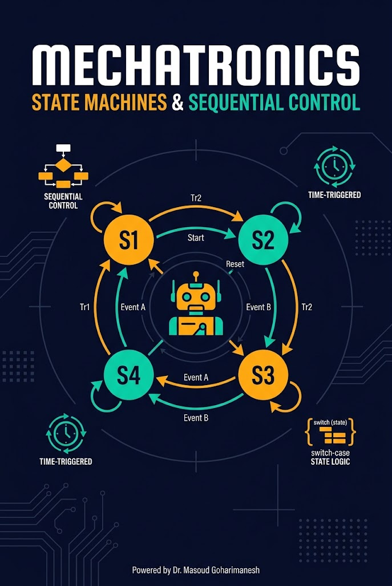
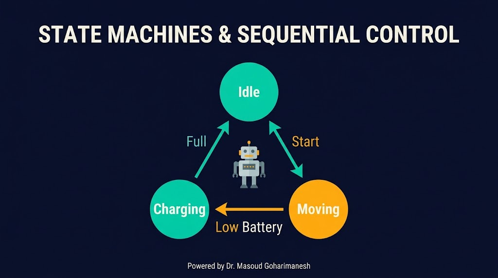
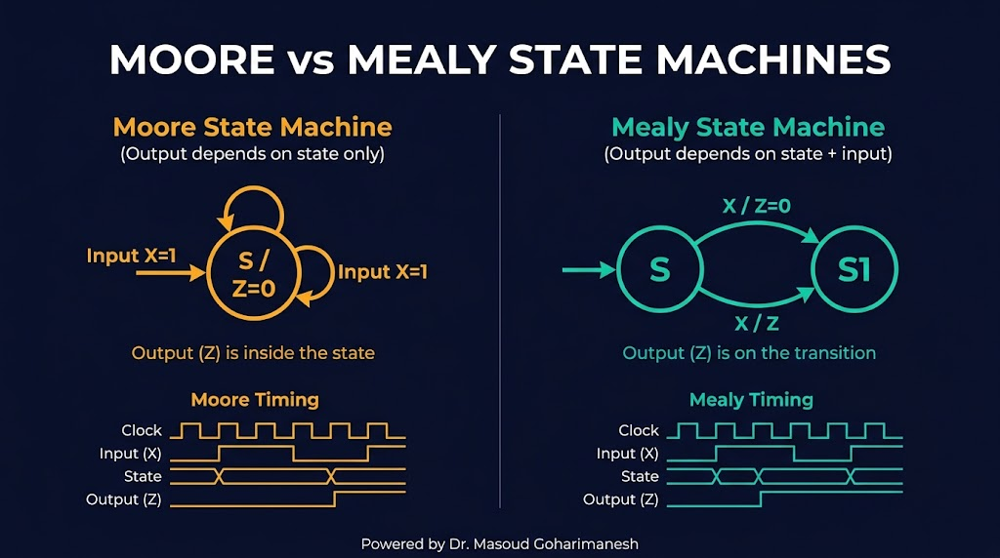
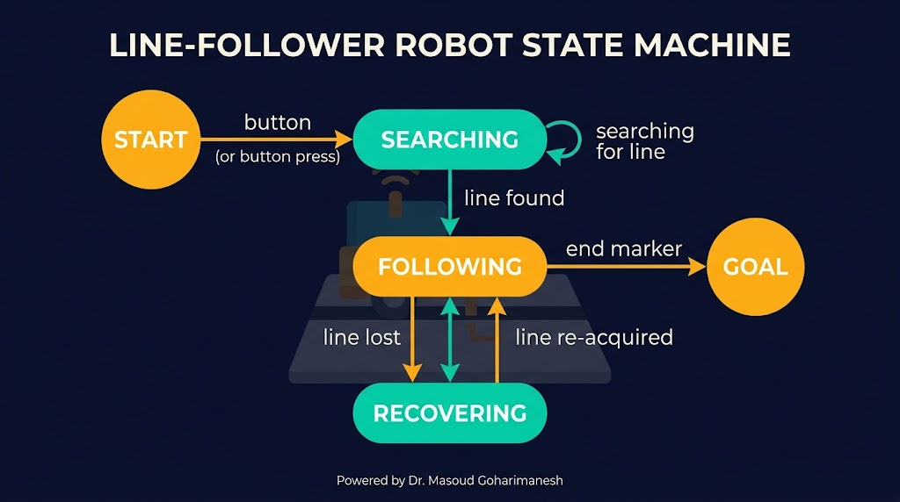
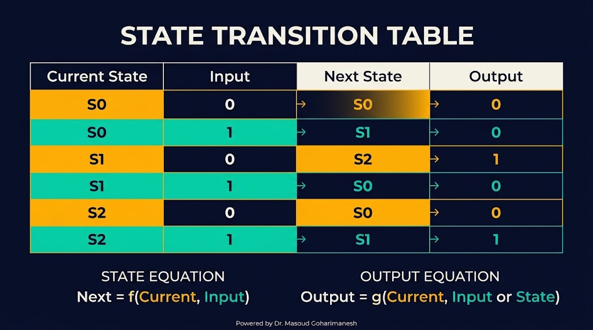
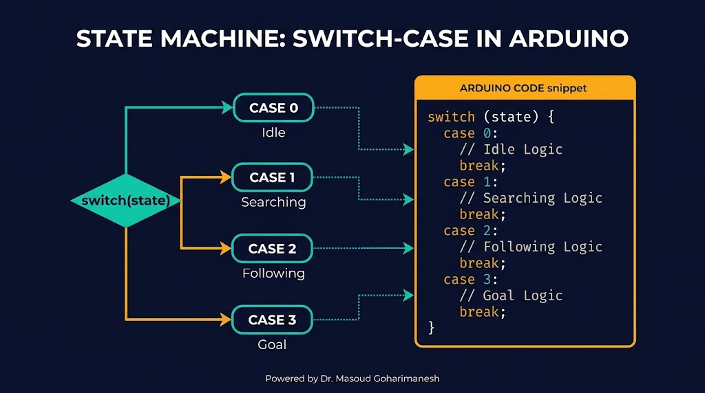
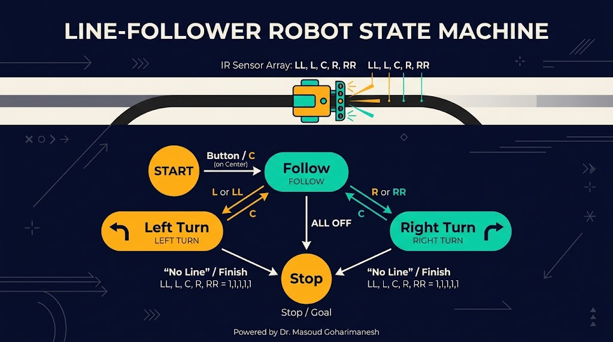
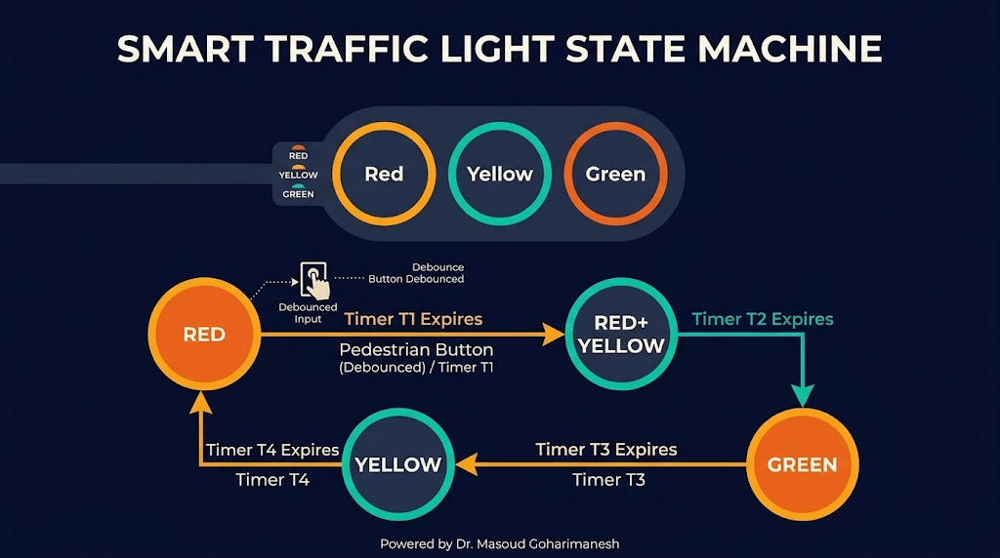

State Machines، نمودار حالت، پیادهسازی
دکتر مسعود گوهریمنش
دانشیار گروه مهندسی مکانیک
دانشگاه تربت حیدریه | پاییز ۱۴۰۵
یک ربات پیچیده، دهها حالت مختلف دارد که باید بین آنها جابجا شود!
چگونه میتوان رفتار پیچیده یک ربات را بهصورت منظم و بدون سردرگمی برنامهریزی کرد؟
مدلسازی سیستمهای دارای حالتهای مختلف

ماشین حالت (State Machine) مدلی است که رفتار یک سیستم را بهصورت مجموعهای از حالتها (States)، ورودیها (Inputs)، انتقالها (Transitions) و خروجیها (Outputs) توصیف میکند. در هر لحظه، سیستم در یکی از حالتها قرار دارد و با دریافت ورودی، به حالت دیگری منتقل میشود.
وضعیت فعلی سیستم — مثل «در حال حرکت»
تغییر از یک حالت به حالت دیگر
رویدادی که باعث انتقال میشود
دو رویکرد متفاوت
نکته: ماشینهای حالت، ابزار اصلی طراحی سیستمهای ترتیبی هستند. آنها به شما اجازه میدهند رفتار پیچیده را به قطعات کوچک و قابل مدیریت تقسیم کنید.
چهار جزء اصلی
S = {s₀, s₁, s₂, ...}
I = {i₀, i₁, i₂, ...}
O = {o₀, o₁, o₂, ...}
δ: S × I → S
حالت شروع (Initial State): حالتی که سیستم در ابتدا در آن قرار دارد.
حالت پایانی (Final State): حالتی که سیستم به هدف رسیده است.
دو نوع مدلسازی

نمایش گرافیکی ماشین حالت

نمایش جدولی ماشین حالت

| حالت فعلی | ورودی (سنسور) | حالت بعدی | خروجی (موتور) |
|---|---|---|---|
| Following | Center (C) | Following | هر دو جلو |
| Following | Left (L) | Left Turn | چپ کند، راست تند |
| Following | Right (R) | Right Turn | چپ تند، راست کند |
| Following | Lost | Searching | چرخش درجا |
| Searching | Line Found | Following | هر دو جلو |
سه رویکرد اصلی
سادهترین روش — مناسب تعداد حالت کم
آرایهای از حالتها — مقیاسپذیر
هر حالت یک کلاس — مناسب سیستمهای پیچیده
| روش | مزایا | معایب |
|---|---|---|
| switch-case | ساده، قابل فهم | برای حالتهای زیاد طولانی میشود |
| Table-Driven | مقیاسپذیر، قابل توسعه | کمی پیچیدهتر |
| شیگرا | مدیریت بهتر، قابلیت استفاده مجدد | مناسب آردینو نیست (حافظه کم) |
روش پایه و پرکاربرد

enum State { IDLE, MOVING, STOPPED, ERROR };
State currentState = IDLE;
void loop() {
switch(currentState) {
case IDLE:
if (startButtonPressed()) {
currentState = MOVING;
}
break;
case MOVING:
moveForward();
if (obstacleDetected()) {
currentState = STOPPED;
}
break;
case STOPPED:
stopMotors();
if (obstacleCleared()) {
currentState = MOVING;
}
break;
case ERROR:
blinkError();
break;
}
}
مقیاسپذیر و قابل توسعه
struct Transition {
State current;
Event event;
State next;
};
Transition transitions[] = {
{IDLE, START_PRESSED, MOVING},
{MOVING, OBSTACLE, STOPPED},
{STOPPED, OBSTACLE_CLEARED, MOVING},
// ...
};
void updateState(Event evt) {
for (int i = 0; i < NUM_TRANSITIONS; i++) {
if (transitions[i].current == currentState &&
transitions[i].event == evt) {
currentState = transitions[i].next;
return;
}
}
}
مزیت: افزودن حالت جدید فقط با اضافه کردن یک سطر به جدول — بدون تغییر منطق اصلی!
پنج حالت اصلی

کنترل ترتیبی زمانبندی شده

توسعه: با اضافه کردن دکمه عابر پیاده، میتوان حالتهای ویژه (Pedestrian Request) اضافه کرد.
ربات با ماشین حالت
با حرکت خط، سنسورها و حالت ربات را مشاهده کنید.
جلسه چهاردهم - ماشینهای حالت و کنترل ترتیبی
نکات کلیدی جلسه چهاردهم
جلسه بعد: طراحی سیستمهای مکاترونیکی
Powered by Dr. Masoud Goharimanesh